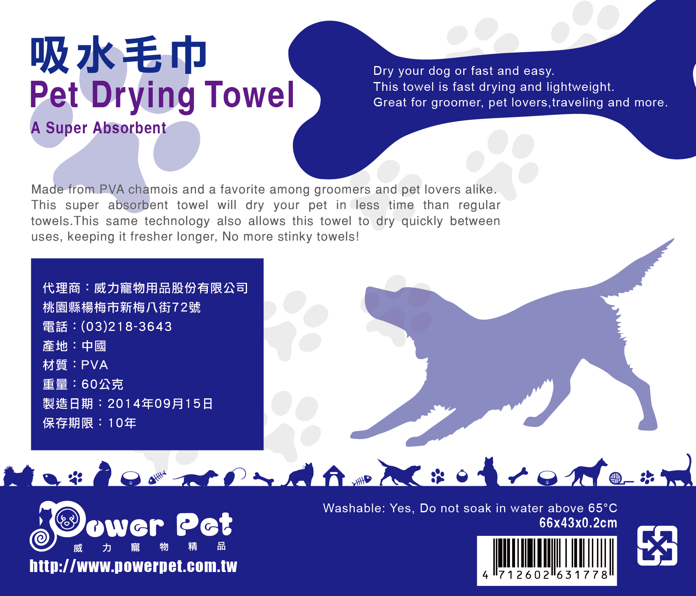
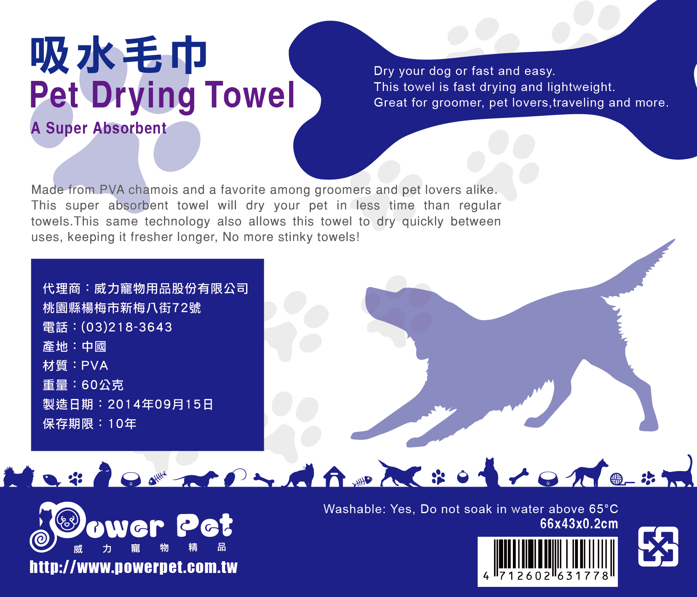

About
春天來了，雪都婷了！
基本構成
黃雪婷
民國79年（1990） 3月27日 出生
桃園人
目前未婚，上有老母，中有兄長一枚，膝下無子
現任普通升斗小民上班族
學校養成
2008-2012 中原大學 商業設計學系
2005-2008 臺北市立中正高級中學

工作添加
校內行政工讀 半年 2011-2012
元祺有限公司 網頁兼平面設計人員 2012/04-2016/03
【現職】EZprice比價網 UI設計師 2016/04-
目前在本公司是Web前端UI+App設計雙棲
興趣怪癖
玩弄3Ｃ產品(目前是手機兩大系統的重度User)、優質動漫欣賞、照片攝影、特愛日本趴趴走（希望可以全國制縣達陣！) 、特愛網購與數位帳戶、看到酷炫好看或是很奇怪的網站會下意識地按右鍵檢查元素、對於工作的完美度有點莫名的小小堅持。
-
更多內幕
往下看

 
